滤波天线
一种高选择性L型探针滤波天线
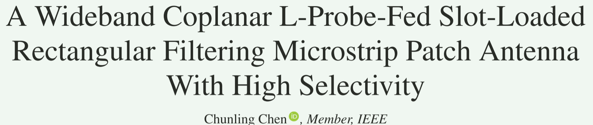
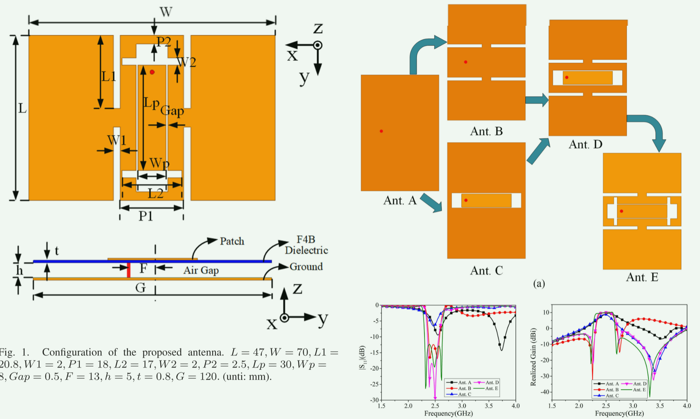
Abstrat
本文提出了一种共面L探头缝隙加载宽带滤波微带天线。通过引入四个缝隙和一个共面的L探头实现了滤波特性。激发一个标准的TM20模，以在较低的波段达到辐射零点。此外，一个标准的TM21模和L探测器对上波段的两个辐射零点有贡献。这些缝隙还会激发新的谐振模式，以提高天线的带宽。分析表明，传统的TM01模式和重塑的TM21模式被激发并相互耦合，实现了较宽的带宽。测试结果表明，该天线在2.32~2.63 GHz范围内具有14%的10dB阻抗带宽，在2.48 GHz处的峰值增益为9.24dBI。在通带范围内，增益变化小于1d B。该天线具有结构简单、共面、易于制作等优点，适用于各种无线通信系统。
仿真与理解
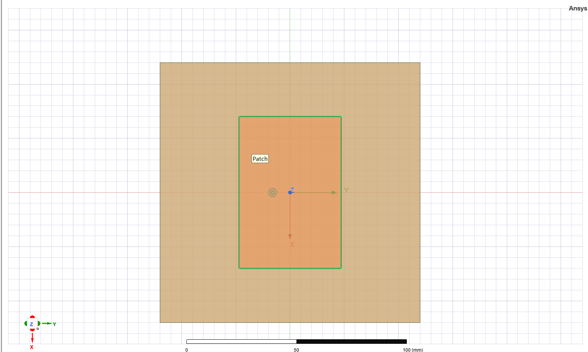
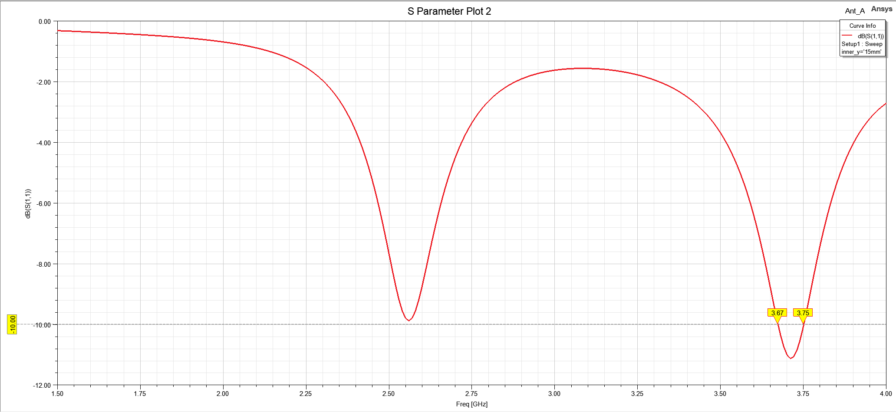
谐振特性：仅存在单一谐振点，对应矩形微带贴片的本征基模TM01，工作带宽极窄，无滤波特性、无辐射零点。
模式来历：矩形微带贴片的天然本征谐振，电场沿 y 方向呈现半波长分布、x 方向无场变化，边射方向（+z）产生有效辐射，是微带贴片天线的基础工作模式。
该天线是从矩形微带贴片天线蚂蚁开始的。通过文献启发，沿着辐射的边缘切割了四个槽，称为蚂蚁。
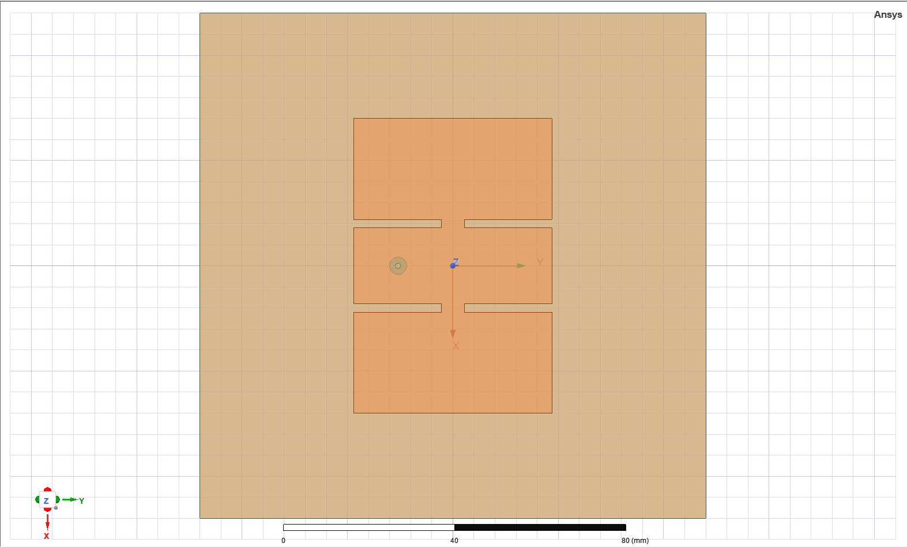
核心变化：沿贴片辐射边蚀刻 4 个槽，截断了表面电流路径，改变了贴片边界条件与电流 / 电场分布，实现模式重构与辐射零点激发，是宽带与滤波特性的核心基础。
| 模式类型 | 对应频点 | 模式特征与激发来历 |
|---|---|---|
| 基模TM01 | 通带低频段 | 开槽未破坏基模本征谐振，依然是天线核心辐射模式，对应通带内的基础谐振点 |
| 标准TM20模式 | 2.25GHz | 4 个开槽的电流扰动激发，电场沿 x 方向 2 个半波长周期变化、y 方向无明显场变化，边射方向形成辐射零点，无有效辐射 |
| 标准TM21模式 | 2.76GHz | 开槽的电流路径重构激发，电场沿 x 方向 2 个半波长、y 方向半波长分布，本征边射辐射相互抵消，形成辐射零点 |
| 重塑TM21模式 | 通带高频段 | 开槽改变了TM21模式的电流相位与幅度分布，重构了其辐射方向图，消除了原本的边射零点，使其具备边射辐射能力；该模式与TM01基模耦合，激发新谐振频点，实现带宽初步拓展 |
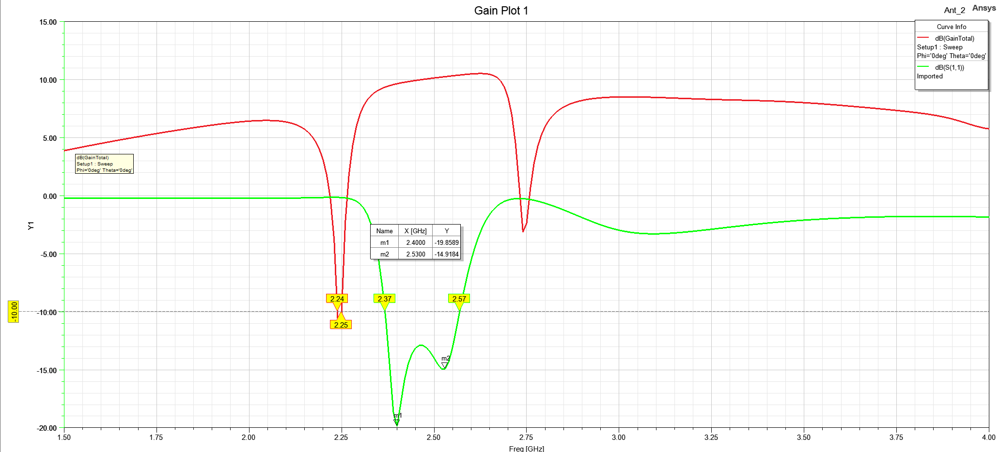
切开了四个槽之后，激发了一个TM20模式和一个TM21标准模式。可以看但左右两边各添加了一个辐射零点，在2.25 GHz，电流分布表
明，表面电流沿贴片和缝隙的边缘反向流动。因此，在2.25 GHz处获得了最低的辐射效率和零边增益。
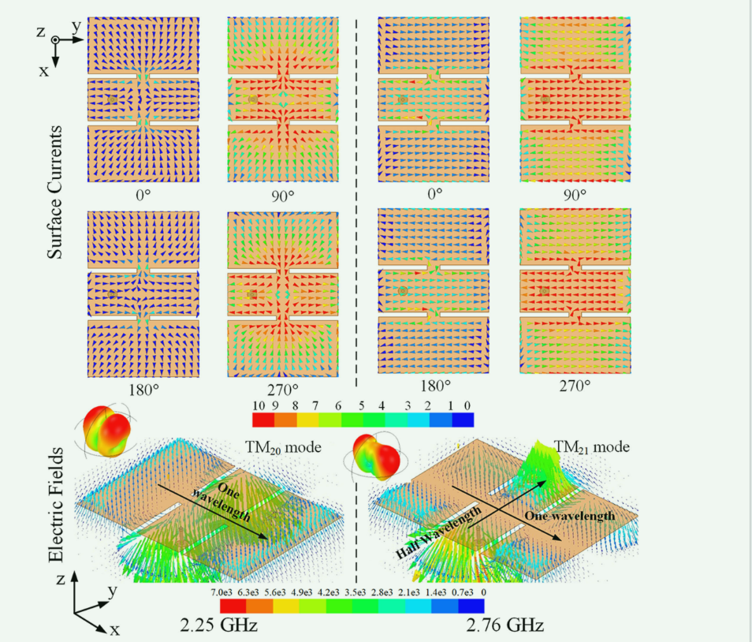
此外，电场也如图3所示。可以观察到电场沿x方向随一个波长变化。然而，它在y方向上几乎没有变化。上述结果表明，在这种情况下，在宽边有辐射零点的TM20模被激发。因此，2.25 GHz处的辐射零点也可以用TM20模的激发来解释。另一方面，在2.76 GHz处，中心部分的电流与外部部分的电流存在反相，在优化表面电流的幅度后，导致辐射零点。此外，电场在x方向和y方向上分别变化了一个波长和半个波长。上述结果意味着在这种情况下实现了在宽侧具有辐射零点的TM21模式。因此，2.76 GHz处的辐射零点也可以用标准TM21模的激发来解释。
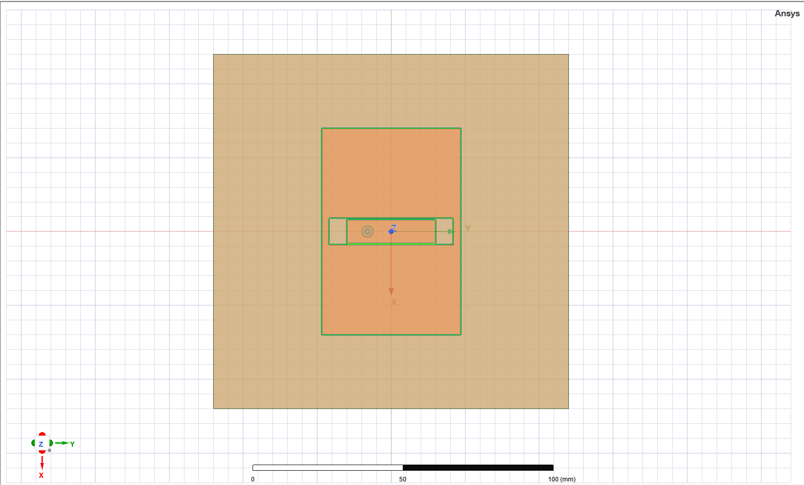
核心变化：采用共面长 L 型探针替代传统馈电结构，无开槽设计，核心作用是优化阻抗匹配、引入高频辐射零点。
模式与谐振特性：
- 核心工作模式仍为TM01基模，L 型探针的容性耦合抵消了贴片的感性电抗，大幅改善了基模的阻抗匹配，拓展了基模的匹配带宽。
- 激发了 3.41GHz 处的专属谐振特性：由 L 型探针自身开路枝节的谐振、以及探针与贴片之间的容性耦合共同产生，该频点形成辐射零点，同时优化了天线高频阻带的反射系数。
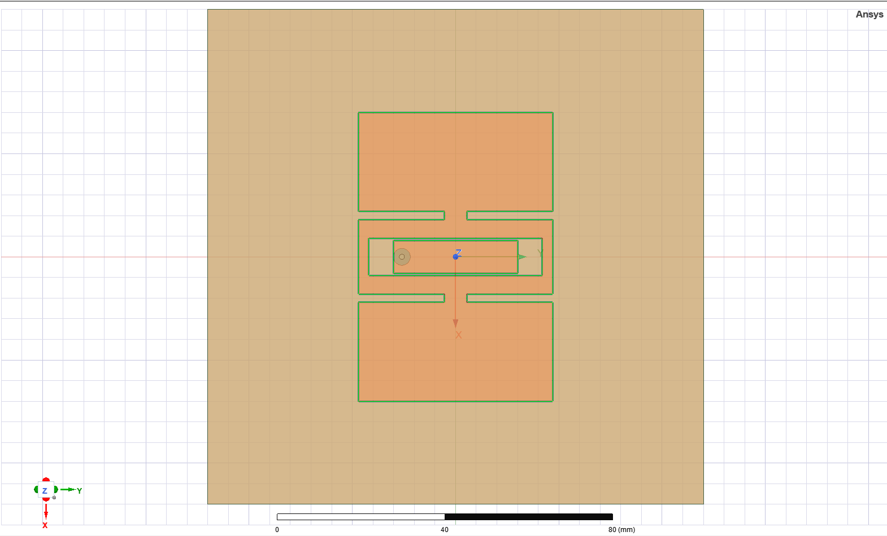
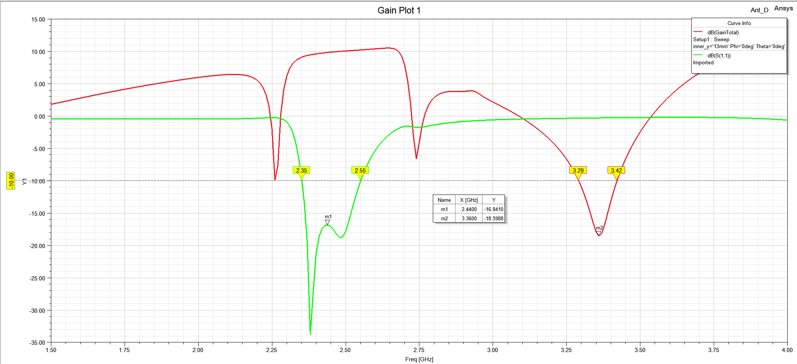
核心变化：融合 Ant.B 的开槽结构与 Ant.C 的 L 型探针馈电，完整继承了两者的模式特性。
模式与谐振特性：
- 同时激发TM01基模、重塑的TM21辐射模式，两个模式耦合形成双谐振特性，初步实现宽带工作。
- 完整继承了三个辐射零点对应的模式：TM20模式（2.26GHz）、标准TM21模式（2.74GHz）、L 型探针引入的谐振模式（3.38GHz）。
核心缺陷：高频段 2.67GHz 处出现严重阻抗失配，输入阻抗达 351Ω，与 50Ω 馈线不匹配，压缩了天线有效工作带宽。
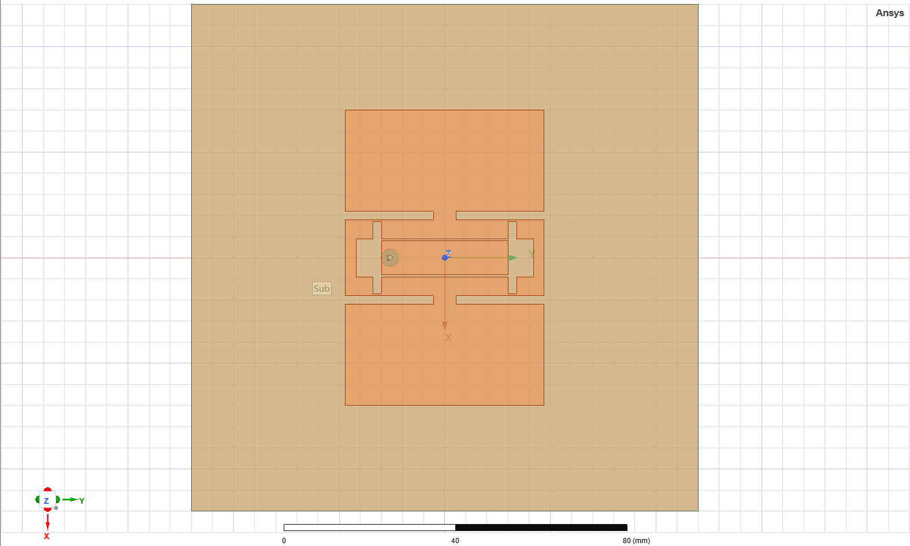
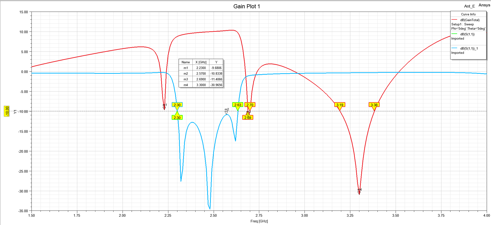
核心变化：在 Ant.D 基础上，于贴片中心蚀刻沿 x 轴的整形槽，解决高频阻抗失配问题，最终实现宽带、高选择性滤波辐射。
有效工作模式与对应谐振点（均为边射辐射模式，构成天线通带）：
TM01基模：对应 2.32GHz、2.49GHz 两个谐振点。
2.32GHz 处，表面电流沿 y 方向半波长变化，电场在贴片边缘形成两个反相峰值、中心为零点，是典型TM01模式；
2.49GHz 处电流与电场分布与 2.32GHz 高度一致，仍工作于TM01模式，构成基模的宽带谐振特性。
2.重塑的TM21模式：对应 2.62GHz 谐振点。
贴片中心电流沿 + y 方向，外侧电流沿 - y 方向，两者相位差 140°，矢量和不为零，可形成有效边射辐射；
电场沿 y 方向半波长、x 方向 1 个波长分布，符合TM21模式特征。开槽重构了该模式的电流分布，消除了其原本的边射零点，使其具备边射辐射能力。
三个辐射零点的产生机理
- 低频辐射零点（2.23GHz，通带下边缘）
核心来源：4 个辐射边开槽激发的 **TM20高阶模式 **。
贴片辐射边的 4 个槽截断了表面电流路径，使贴片表面形成沿 x 方向反向的两对电流回路，激发了TM20高阶模式。
该模式下，表面电流沿贴片边缘与槽边形成反相分布，反向电流的辐射场在边射方向（+z）相互抵消，辐射效率急剧下降，最终形成边射增益零点。
2.高频近带辐射零点（2.73GHz，通带上边缘）
核心来源：4 个辐射边开槽激发的标准TM21高阶模式。
4 个开槽的电流扰动激发了贴片的标准TM21模式，该模式电场沿 x 方向 1 个波长、y 方向半波长分布。
该模式下，贴片中心区域的表面电流与外侧区域的表面电流形成反相，经优化后两者电流幅度接近，反向电流的辐射场在边射方向几乎完全抵消，从而形成辐射零点。
该零点紧邻通带上边缘，实现了通带高频端的第一重高选择性抑制，构成了通带陡峭的上滚降特性。
3.高频远带辐射零点（3.34GHz，高频阻带）
核心来源：共面 L 型探针自身的谐振特性，以及探针与贴片之间的容性耦合。
共面 L 型探针的开路枝节形成了独立的谐振路径，在 3.34GHz 处产生自身谐振；同时，L 型探针与贴片之间的强容性耦合，在该频点使馈入能量无法有效耦合至贴片辐射体，大部分能量被反射。
该频点下，贴片上无法形成有效的同相辐射电流，馈入能量无法转化为边射方向的辐射场，最终形成辐射零点。
该零点进一步提升了高频段的带外抑制能力，同时 L 型探针的特性同步优化了高频阻带的反射系数，实现了更宽的阻带抑制效果。